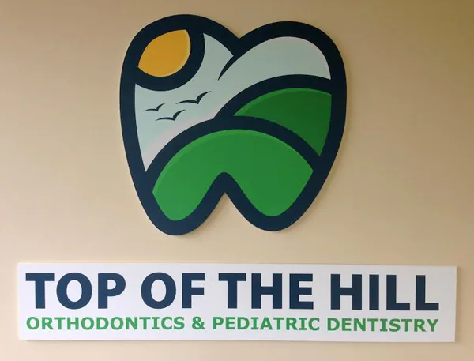

Contact the pediatric dentist and orthodontist in Chestnut Hill
Complete the practice’s appointment-request form. A scheduling coordinator will contact you to confirm your appointment.
- Orthodontics
- (215) 220-3777
- Pediatric dentistry
- (215) 220-3778
- Address
- 10 W Gravers Lane

How a visit request works. There are no time slots to pick.
- 1. Send the formYour name, email, phone, appointment type (Ortho, Pedo or Both) and an optional comment.
- 2. The coordinator follows upThe scheduling coordinator contacts you to confirm.
- 3. Your visit is setThe office confirms the day and time with you.
- Changes and urgent issuesThe form is for new requests only. Call the office for changes or an urgent problem.
This prototype collects no patient or health information. A real-time scheduler is one optional improvement from the assessment (Proposal, not live); it needs the practice’s approval and a privacy review, and none is linked.

Getting here. 10 W Gravers Lane, Philadelphia, PA 19118.
- ParkingMetered along Gravers Lane and Germantown Ave, and in the lot behind PNC Bank.
- TrainChestnut Hill East and West stations are a few blocks away.
- BusSEPTA Route 23 stops out front.
From current website Pending practice review Opening hours were not in the supplied material, so none are shown. An email address appears in the assessment and on the current site; it stays hidden until the practice confirms it should be public.

Urgent problems
For an urgent dental or orthodontic problem, call instead of sending a request: (215) 220-3777 for orthodontics or (215) 220-3778 for pediatric dentistry. In a life-threatening emergency, call 911.